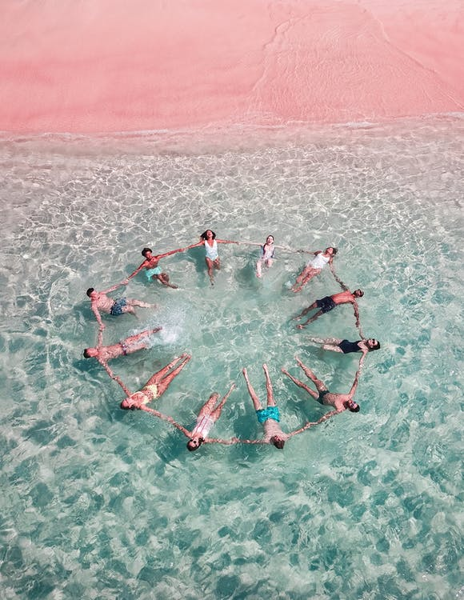
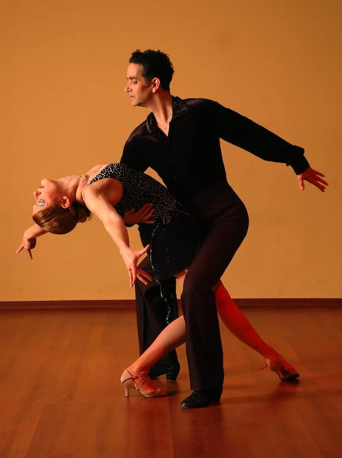

Swimming helps avoid the feeling of sweat all over your body and works a wide range of muscle groups such as abs, back, forearms, shoulder, hamstrings, and glutes
Waling is nonintensive, meaning that it is very doable for the general population since it doens't put much stress on the person's body.

Any form of movement is going to improve your health, while the benefits may depend on how much you push yourself being able to find exercise you will enjoy and be able to do consistently is great!
Going to a gym will help focus on certain parts of your body which can help with self-confidence and buidling a balanced physique.